Exploring Child Health with Data from the National Survey of Children's Health (NSCH) and America's Health Rankings (AHR)
Background
In 2002, Nelson Mandela spoke at the AIDS Vaccine Conference in South Africa, delivering a powerful speech about the responsibility of all
people to support the health and well-being of children. He said:
Giving children a healthy start in life, no matter where they are born or the circumstances of their birth,
is the moral obligation of every one of us. It is heartbreaking to think that three million children die each
year from diseases that we can prevent.
These are three million needless deaths every year. These are children that would have grown up to support
their families, their communities and their nations.
They would have been productive members of societies that are still developing and need their children to be
healthy and strong. By preventing these deaths, we would not only save the lives of children but we would also
help strengthen communities and contribute to the development of strong and prosperous nations.
Research supports Mandela’s assertions linking child health and community prosperity. According to a recent consensus study
report from the National Academies of Sciences, Engineering, and Medicine - Board on Children, Youth, and Families, adult health begins in
childhood, and improving the health of children has enormous societal gains (Chang, 2024). The report advocates for all children to receive
a healthy start in life. In the future, children will become caregivers of their own parents and children. Additionally, improving children's
health stems chronic disease progression. Many conditions experienced by adults, such as diabetes and obesity, begin in childhood. As such,
prevention efforts should start early in life. The authors also discuss the recent advances in health diagnostics and treatment, including
genomics and predictive personalized medicine, which lead to early detection and management of inherited and chronic conditions.
Nations experience greater productivity and economic gains when children are healthy (Chang, 2024). According to UNICEF (UNICEF, 2005), "child health and wellbeing
support the nation’s tax base, workforce, economic prosperity, and sustain a high standard of living." There are reduced costs of caring for
sick children. For example, when children are ill, parents miss work, play and rest, affecting their overall well-being and productivity.
Healthcare may also be expensive, resulting in an additional financial burden on the family.
From early diagnosis to personalized care and support, machine learning can help in all aspects of child health. These methods allow researchers to identify policies
and practices that result in the best outcomes with the most impactful use of limited funds.
Illustration: Machine Learning Contributes to All Aspects of Child Health
NSCH is a survey developed and administered annually by the U.S. Census Bureau with funding from the
Health Resources and Services Administration (HRSA),
Maternal and Child Health Bureau (MCHB).
This household survey began in 2003 and collects data on the physical and mental health of children 0–17 years old. All 50 states
and the District of Columbia participate.
The 2023 NSCH includes the following topics:
Demographics for the children and families
Children’s physical and mental health status
Health insurance status, adequacy, and type of coverage
Access to and use of health care services
Early childhood characteristics (0-5 years)
Middle childhood and adolescent characteristics (6-17 years)
Family health and activities
Parental perceptions of neighborhood and community characteristics
Since 1990, the AHR has taken stock of the health and well-being of Americans each year by examining 280 measures of health from 80 distinct data sources.
Topics include:
measures of care, such as access to care, preventative clinical care, quality of care,
measures of health, such as mortality, nutrition and physical activity, physical health, sexual health, sleep, smoking and tobacco use, behavioral health,
environmental factors, including air and water quality and climate and health,
community characteristics, such as safety, economic resources, housing and transit,
family characteristics, including demographics, education,
social support and engagement.
NSCH and AHR data help communities and families make informed decisions to support the health and well-being of the children and youth in their
care. Community-level data are available for participating areas, allowing them to compare their location to neighboring communities, other
states and the nation. Local public health agencies, day-care centers and schools can use their results to evaluate their systems and
processes, gaining insights into where improvements can be made. These data also promote inter-agency cooperation for reform and lasting
change. For example, data sharing can encourage greater openness among schools, medical and mental-health providers, police and the courts.
Data from the NSCH and AHR are used for a variety of purposes. As such, a large body of reports and peer-reviewed publications are available.
NSCH publications include exploring aspects of overall child health, school-readiness, mental health and children with special needs.
A full list of NSCH publications authored by MCHB staff is available through the
NSCH Publications Page.
AHR reports are available on their
reports page.
This project explores the NSCH 2023 and AHR databases with machine learning techniques including K-means clustering and hierarchical clustering, principle component analysis,
Naïve Bayes, decision trees, random forest, and XGBoost. Analyses are limited to individual and state-level comparisons. Identifiers at the local level, such as city or zip code,
are not available on the NSCH public database.
This research began with the 10 questions listed below under Q&A, which were initially investigated through exploratory data analysis (EDA). State-level comparisons include the 50 states
and District of Columbia (N=51). State-wide estimates of NSCH are generated by combining the child’s weighted counts for each response over the weighted total possible responses
to obtain state-level weighted percentages (N=51). Individual-level comparisons for the NSCH are weighted with the sampling and response weights and include all respondents
with non-missing values (unweight N=54,159, weighted N=~14 million).
EDA identified interesting patterns in the data. After this initial pass through the data, the analysis honed in on questions 1, 6, 9, and 10 from the Q&A below, specifically:
Question 1: What state-wide factors predict state-wide immunization coverage by 24-months?
Question 6: What state-wide features predict state-wide insurance coverage?
Question 9: Among teenagers, what features predict inadequate sleep?
Question 10: What factors contribute to children not accessing preventive care?
We employed K-means clustering and hierarchical clustering methods to explore Question 1, focusing on only two predictors. Further exploration expanded the predictors to 10 state-wide features,
specifically: 1) receiving preventative care, 2) children in excellent/very good health, 3) having a place to receive health care, 4) insurance coverage, 5) adults completing high school,
6) population < 18 years old, 7) above the federal poverty line, 8) primary care providers per 100,000, 9) public health spending per capita, and 10) supportive engagement. For this
question, we implemented principal component analysis for feature reduction to find patterns in the state-characteristics leading to immunization coverage. With a similar list of state-level
features, we examined Question 6 with a decision tree model.
Questions 9 and 10 evaluate data at the individual child-level. We analyzed Question 9 using Bernoulli Naïve Bayes with dichotomized variables for: screen time usage, age, housing instability,
family food and cash assistance, adequate and continuous insurance, health status, preventative care visits, and place to get health care. For Question 10, we assessed the performance of
decision tree, random forest and XGBoost classification.
Q&A
What state-wide factors predict state-wide immunization coverage by 24-months?
Preventative care and insurance coverage are good predictors of immunization coverage. States that have similar rates of insurance and preventative care coverage cluster together.
Theses results identify that a gap in coverage for insurance and preventative care corresponds to a gap in childhood immunization rates. This interdependency suggests that improving one of these measures
may positively influence the others. PCA analysis supported these findings showing that states with higher populations <18, fewer primary care providers, less preventative care and reduced insurance coverage
may require additional support to increase immunization coverage.
What impact does the percentage of children who received all recommended vaccines by 24 months have on children receiving preventative care check-ups at the state-level?
Median vaccine coverage was 67.7% across the states. If we considered < 67.5% as low coverage and 67.5% or greater as medium to high coverage, we see that the percentage of children receiving at
least one preventative care visit is slightly higher in the medium or high group. Specifically, in the low immunization group, a median of 79.4% of children and for the medium or high group, a median of 80.9% of
children received a preventative care visit. This suggests that preventative care may play a role in childhood immunization coverage.
How does state-level public health funding per person influence number of active primary care providers per 100,000 population at the state-level?
On average, states spend between $100-200 per capita on public health (median(P25, P75) = $123 (96.0, 156.5)). As per capita public health spending increases, the number of active primary care providers
per 100,000 people also increased.
How does the number of active primary care providers per 100,000 population at the state-level relate to children having a place to receive care regularly?
As the number of active primary care providers per 100,000 population increases, the percentage of children who have a regular place to receive care also increases.
How does at least one preventative care visit influence overall child health at the individual-level?
Health status does not differ by whether a child had a preventative care visit. The proportion of children in each of the five health status groups appears similar for those with and without
preventative care.
What state-wide features predict state-wide insurance coverage?
Per capita spending on public health of at least $147 per person delineated the data fairly well into states with and without good insurance coverage. This has important implications for states
hoping to bolster insurance coverage for their residents. Since the median public health spending is $123, on average states would only need to increase their spending by approximately $24 per person in order
to reach this threshold. Such an investment could provide residents with greater access to health coverage.
How does a family's poverty level impact overall child health?
As overall health status decreases, the proportion of children at the highest income group (i.e. 400% or more of the poverty level) also decreases. The relationship between health status and poverty
is also evaluated for those below the federal poverty level and shows that as health worsens more children are in families below the poverty level.
What is the relationship between benefits from the Women, Infants, and Children (WIC) Program and overall child health?
The most vulnerable health groups are those children in the "good", "fair" and "poor" categories. We see that families that have support from WIC tend to be in the "good" and "fair" categories and
less so in the "poor" health category.
Among teenagers, what features predict inadequate sleep?
Limiting screen time appears to play a role for adequate hours of sleep for teenagers. Once the average hours of screen time exceed 1 hour per day, the weighted proportion of teens experiencing
inadequate sleep nearly doubles from 17% for 1 hour to 33% for 4 or more hours. Other influential features for inadequate sleep included: older teens, housing instability and children in poorer health. Helping
these groups obtain enough sleep could improve their overall physical and mental health.
What factors contribute to children not accessing preventive care?
The percentage of children receiving at least one preventative care visit ranged from 69.8% to 89.3%. Not having a usual place to receive health care is the most predictive feature of
not receiving preventative care. Other features, such as poverty, moving, lower education, older children and living outside of the Northeast, were also important features. For example, states reported over 10%
of households living below the federal poverty level (median(P25, P75) = 12.2(11.05,13.65)). As the percentage of households below the federal poverty level increases (i.e. more people living in poverty),
the percentage of children receiving preventative care decreases. Additionally, children experiencing housing instability or living three or more places in the last year received a preventative care visit 69% of
the time. Conversely, 80% of children who did not move more than once experienced a preventative care visit. These relationships suggests that targeting those who are most likely to miss visits with public health
messaging and helping people find a regular place for care are viable interventions in increasing preventative care coverage.
References
Mandela, N. Address by Nelson Mandela at Vaccine Conference. South Africa 2002.
Available from: http://www.mandela.gov.za/mandela_speeches/2002/0204_vaccine.htm
National Academies of Sciences, Engineering, and Medicine; Health and Medicine Division; Board on Health Care Services; Division of Behavioral and
Social Sciences and Education; Board on Children, Youth, and Families; Committee on Improving the Health and Wellbeing of Children and Youth through
Health Care System Transformation; Perrin JM, Cheng TL, editors. Launching Lifelong Health by Improving Health Care for Children, Youth, and Families.
Washington (DC): National Academies Press (US); 2024 Dec 30. 1, Child Health and Health Care: Uniqueness, Societal Importance, and Vision for the Future.
Available from: https://www.ncbi.nlm.nih.gov/books/NBK610738/
United Nations International Children’s Emergency Fund (UNICEF). Report card no. 6: Child poverty in rich countries 2005. UNICEF Innocenti Research Centre;
2005. Available from: https://www.unicef-irc.org/publications/pdf/repcard6e.pdf
Data Preparation & Exploratory Data Analysis
Data Preparation
The NSCH 2023 data are not available directly through an API, as users must agree to follow
the NSCH data use requirements. Instead, SAS, Stata, or CSV data files with corresponding codebooks can be downloaded from the
Data Resource Center
and the
US Census Bureau. Due to these
requirements, the data are not stored directly on the GitHub page, as each user must agree to these conditions.
Once the NSCH 2023 CSV file was downloaded, the data were read into Python using the program
1a_NSCH_family.
Identifiers and features of interest were kept. The NSCH data include FIPS codes for the states. New variables for the state long and short names were added. Missing codes of 95 and 99
were replaced with NAN. Records that were missing data for important analysis variables were removed, as the number missing relative to
the total is small, specifically:
overall health of the child (missing 131),
preventative care (missing 457),
regular place to receive care when the child when sick (missing 219),
insurance satus (missing 348),
poverty level not missing, as they used imputation
Other variables that are missing more often are family WIC status (missing 1272), screen time (missing 749), and number of places lived
in the last year (missing 1420). For analyses which include these variables, we will limit the analysis to non-missing responses, as
missing values are across all states and appear to be missing at random. Lastly, the program outputs a csv file (NSCH_fam.csv with
N=54,159 children).
Next, the child-level data (NSCH_fam.csv) are rolled-up to the state-level by calculating weighted proportions of the children with a
given response using the Python program
1b_NSCH_state_data.
A csv file with the state-level weighted proportions is output (NSCH_state.csv with 51 records (each of the 50 states and Washington DC)).
The AHR data are available through the
AHR API, which requires that users register and obtain an API
key. Data use is intended for non-commercial, educational, scientific, or charitable use. Additionally, attribution of source (AHR and any
underlying data sources) is required in any output.
The API was called using Python following the code
1c_AHR_API_and_state_data.
A csv file of the data was output (AHR_state.csv with 51 records).
Finally, the NSCH and AHR state-level data were merged together and the combined data was output (NSCH_AHR_state. with 51 records) using the python program
1d_NSCH_AHR_combined_state_data.
This datafile includes analysis variables, which are used in the data exploration and analysis.
Exploratory Data Analysis (EDA)
This research explored 10 questions in Python using the program:
2_NSCH_AHR_Visualizations.
Results of the EDA for each question are provided below. As a reminder, state-level comparisons
included the 50 states and District of Columbia (N=51). For state-level comparisons, the NSCH was weighted using the sampling and response rate for the child and
rolled up to the state level. Individual-level comparisons for the NSCH are weighted with the sampling and response weights and include all respondents with non-missing
values (N=54,159).
Question 1: What state-wide factors predict state-wide immunization coverage (AHR, 18114:vaccination, low versus medium or high coverage) by 24-months?
Figure 1
Question 2: What impact does the percentage of children who received by age 24 months all recommended vaccines (AHR, 18114:vaccination, low versus medium or high coverage)
have on children receiving preventative care check-ups (NSCH, state-level, C1/C2, 1 or more visits versus no visits, PrevMed_23)?
Median vaccine coverage was 67.7% across the states. If we considered < 67.5% as low coverage and 67.5% or greater as medium to high coverage, we see that the percentage
of children receiving at least one preventative care visit is slightly higher in the medium or high group. Specifically, in the low immunization group, a median
of 79.4% of children and for the medium or high group, a median of 80.9% of children received a preventative care visit. This suggests that preventative care may
play a role in childhood immunization coverage.
Figure 2
Question 3: How does public health funding per person (AHR, 3837:public health funding) influence number of active primary care providers per 100,000 population (AHR,
17673:primary care provider)?
On average, states spend between $100-200 per capita on public health (median(P25, P75) = $123 (96.0, 156.5)). As shown in Figure 3, as per capita public health
spending increases, the number of active primary care providers per 100,000 people also increased.
Figure 3
Of note, Washington DC is excluded from Figure 4. DC has 553.6 active providers per 100,000, and public health spending per capita in DC is $1,084.
Question 4: How does the number of active primary care providers per 100,000 population (AHR, 17673:primary care provider)
relate to a child having a place to receive care regularly (NSCH, state-level, C8, place usually take child when sick, K4Q01)?
As the number of active primary care providers per 100,000 population increases, the percentage of children who have a regular place to
receive care also increases (Figure 4).
Figure 4
Of note, Washington DC is excluded from Figure 4. DC has 553.6 active providers per 100,000, and the percent of children in DC who have a place
to receive care regularly is 77.6%.
Question 5: How does at least one preventative care visit (NSCH, individual-level, C1/C2, 1 or more visits versus no visits, PrevMed_23) influence overall child health
(NSCH, individual-level, A1, excellent/very good/good/fair/poor, K2Q01)?
Health status does not differ by whether a child had a preventative care visit. The proportion of children in each of the five health status groups appears
similar for those with and without preventative care (Figure 5).
Figure 5
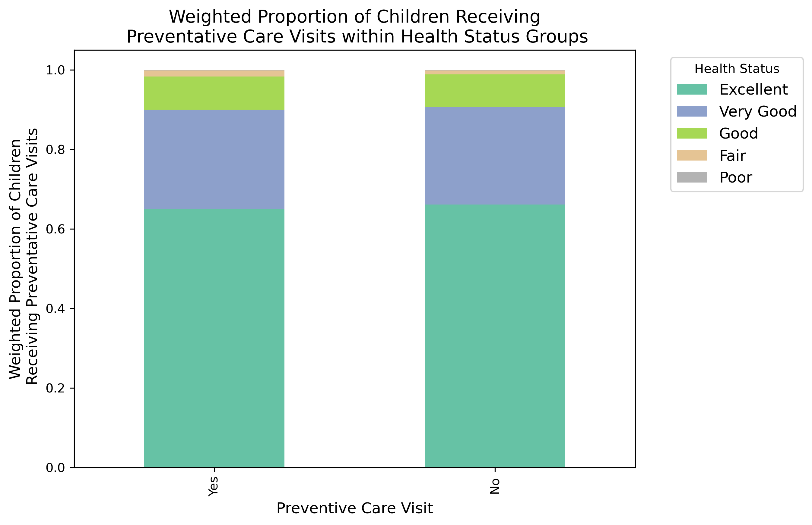
Question 6: What features predict insurance coverage (NSCH, individual-level, E2/E3, insurance status, smAdeqIns_23 rolled up and
AHR, 16125:Uninsured)?
We first evaluated the child level data before exploring the state-level data. As the child's health status worsens from 'Excellent' to 'Poor', we see a trend with adequate insurance coverage decreasing.
As shown in Figure 6, among those with excellent health, 69% have adequate insurance. This drops to 45% having adequate insurance among those with poor health.
Figure 6
Question 7: How does family's poverty level (NSCH, individual-level, K3, income, povlev4_23 (Income level based on family poverty level status, imputed) ) impact overall
child health (NSCH, individual-level, A1, excellent/very good/good/fair/poor, nomChHlthSt_23)?
As overall health status decreases, the proportion of children at the highest income group (i.e. 400% or more of the poverty level) also decreases (Figure 7a).
The relationship between health status and poverty is also evaluated for those below the federal poverty level in Figure 7b and shows that as health worsens more children
are in families below the poverty level.
Figure 7a
Figure 7b
Question 8: What is the relationship between benefits from the Women, Infants, and Children (WIC) Program (NSCH, individual-level, I7, Yes/No, WIC_23)) and overall child health
(NSCH, individual-level, A1, excellent/very good/good/fair/poor, nomChHlthSt_23)?
The most vulnerable health groups are those children in the "good", "fair" and "poor" categories. We see that families that have support from WIC tend to be in the "good" and "fair"
categories and less so in the "poor" health category.
Figure 8
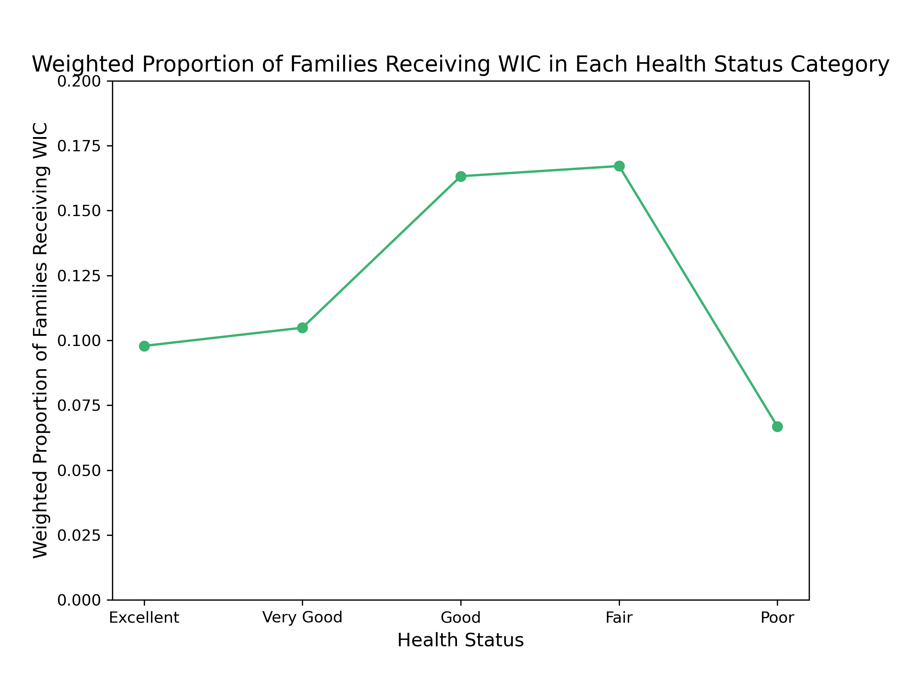
Question 9: Among teenagers, what features predict inadequate sleep (less than the average recommended number of hours for age) (NSCH, individual-level, H5, hours, HrsSleep_23
(Child slept recommended age-appropriate hours during an average day/on most weeknights, age 4 months – 17))?
Limiting screen time appears to play a role for adequate hours of sleep for teenagers. Once the average hours of screen time exceed 1 hour per day, the weighted proportion of teens
experiencing inadequate sleep nearly doubles from 17% for 1 hour to 33% for 4 or more hours.
Figure 9
Question 10: What factors contribute to children not accessing preventive care check-ups (NSCH, individual-level, C1/C2, 1 or more visits versus no visits, PrevMed_23)?
Children experiencing housing instability or living three or more places in the last year received a preventative care visit 69% of the time. Conversely, 80% of children who did not move more
than once experienced a preventative care visit.
Table 1
On average, states reported over 10% of households living below the federal poverty level (median(P25, P75) = 12.2(11.05,13.65)). The percentage of children
receiving at least one preventative care visit ranged from 69.8% to 89.3%. As the percentage of households below the federal poverty
level increases (i.e. more people living in poverty), the percentage of children receiving preventative care decreases.
Clustering
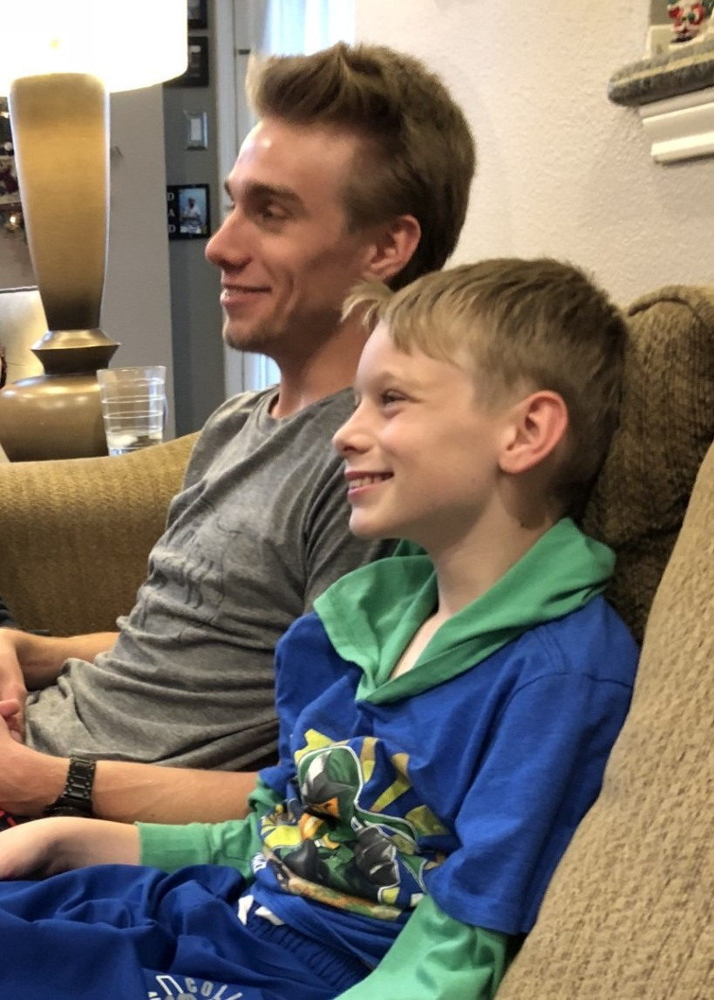
This section includes the results and visualizations from employing K-means and hierarchical clustering.
Overview
Clustering, a type of unsupervised and non-parametric learning, can be carried out primarily through two different approaches. The first utilizes partitional methods in which
observations are organized together based on similar characteristics. K-Means clustering is one of these approaches and groups observations based on the their Euclidean distance from the
cluster centroids. Points are assigned the cluster closest to the given observation. After the first iteration, the process is repeated, recomputing the centroids and the clusters for
each point. This continues until the cluster assignments reach static equilibrium and the clusters remain the same.
Illustration of K Means Clustering (Source: Davis, 2024)
K-Means can be sensitive to the initial pick of k as well as outliers. We can address the challenges of picking k by implementing the elbow method, gap statistic and/or silhouette method.
Although there are more sophisticated clustering methods that do not have these issues, K-Means provides a great first pass for initial data mining.
The second approach is hierarchical clustering, which groups observations together either by splitting observations into smaller and smaller clusters (i.e. divisive or top-down
hierarchical clustering) or joining observations together from the bottom-up (i.e. agglomerative clustering (AGNES)). AGNES begins with each observation as its own cluster. Points are
merged together with other observations that are the most similar to the point, where similarity is based on distance. An advantage of hierarchical clustering is that the method does
not require specifying the number of clusters in advance. Additionally, as with K-Means, distance can assessed using Euclidean distance; however, other distances, such as Manhattan,
maximum and Ward can also be used.
Illustration of Hierarchical Clustering (Source: Davis, 2024)
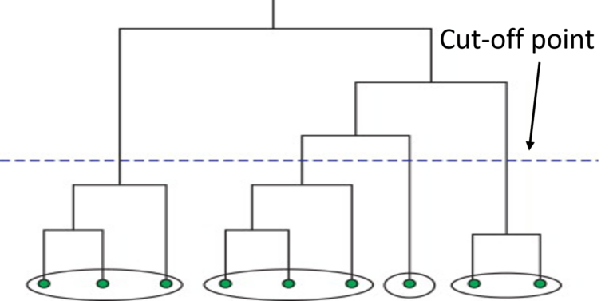
For this analysis, both K-Means and hierarchical clustering were used to uncover patterns in the data. The primary question of interest addresses Question1, which explores features
related to good vaccination coverage for children by age two. The outcome of interest for this analysis is good vaccination coverage where < 67.5% coverage of the state
population is low coverage and 67.5% or greater is medium to high coverage.
Figure 10
As shown in Figure 10, there is a positive correlation between insurance and preventative care. As the percent of the population of the state covered by insurance increases, the percent
engaging in preventative care also increases. When colored by immunization coverage, we see that most of the states with low coverage also have lower percentages of their population
covered by insurance and preventative care.
Data Preparation
Clustering analysis requires the use of unlabeled numerical data. Unlabeled means that we have not included in the clustering analysis the labeled groupings. As such, for this analysis we
looked for clustering patterns between insurance and preventative care. We did not include immunization coverage in the models. Additionally, because clustering looks at the distance between
points, the features were standardized before analysis. To simplify the interpretation of the data, insurance status was flipped from uninsured to insured (100 - the percent
uninsured). Table 2 shows the original and standardized distributions of the features.
Table 2
Due to the data use agreement, these data are stored on a private repository here:
df_state_std_cluster.csv.
Code
All programming was completed in Python using the program
3_NSCH_AHR_Cluster_Analysis.
After the data are read in and the features standardized, the next step of the code is finding the best value for k. From here, the program completes K-Means clustering
with the determined value of k. The code iteratively shows how the clusters stabilize over the iterations. Next the clusters are compared to the true values for immunization status.
The accuracy is assessed and the confusion matrix is generated.
After completing K-Means, the next section of the program focuses on hierarchical clustering for the same features and comparison to the same outcome. The model uses the Agglomerative
or bottom-up method. Cosine Similarity is implemented to measure distance and the average linkage is used. Once the dendrogram is produced, it is cut at two clusters and the clusters
are compared to the true values for immunization status. The accuracy is assessed and the confusion matrix is generated.
Results
States were evently split on insurance coverage with 25/51 (49%) having low coverage and 26/51 (51%) having medium or high coverage. Clustering appeared to work well for these data. Figure 11 shows how the
groupings varied when attempting k=2-10 clusters. On visual inspection, 2-3 clusters look the best.
Figure 11
Visual inspection of the clusters was followed by applying the elbow and Silhouette methods to selecting k. The elbow method (Figure 12) was inconclusive, as the graph
descends without a clear "elbow". Conversely, the Silhouette method showed a clear winner with two clusters having the highest value (Figure 13). This is in line with
the visual inspection of the clusters.
Figure 12
Figure 13
Once two clusters were identified for k, K-Means was completed. Figure 14 shows how the clusters stabilized after the first iteration. The bottom panels of the figure show how
the clusters generated by K-Means analysis compare to the true values for immunization coverage.
Figure 14
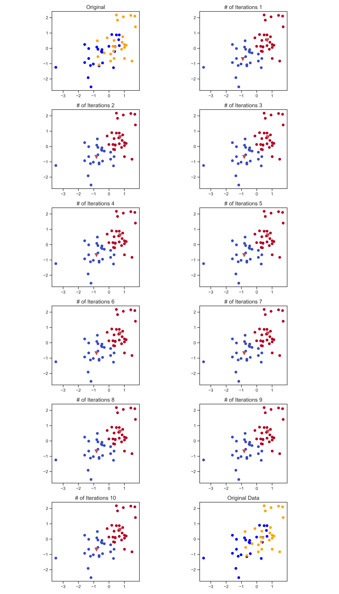
The corresponding confusion matrix is below:
[[17 8]
[ 7 19]]
The confusion matrix illustrates that the accuracy is 0.7059 and the misclassification rate is 0.2941. This is visually represented in Figure 15, where we can see that the
clusters differentiated well on the outer edges, while performing less well where the clusters intersect.
Figure 15
Next, we completed the same analysis using hierarchical clustering techniques. From the dendrogram (Figure 16), we see that the clusters differentiate well at around two clusters,
which is what we found with the Silhouette method in K-Means.
Figure 16
Figure 17 illustrates the comparison of the hierarchical clusters with the true values for immunization coverage.
Figure 17
The corresponding confusion matrix is below:
[[16 9]
[ 4 22]]
The confusion matrix illustrates that the accuracy is 0.7451 and the misclassification rate is 0.2549. As such, hierarchical clustering performed better than K-Means. Figure 15
shows the clusters which were correctly identified and those that were missed. As with K-Means, the clusters on the further sides were identified correctly, while the area of
intersection was more problematic.
Figure 18
Conclusions
K-Means and hierarchical clustering showed that there are unique similarities within states that have similar rates of insurance and preventative care coverage. States clustering together
with lower coverage tended to also have lower immunization coverage. Those with medium to high insurance and preventative care rates clustered together. This group tended to also have
medium to high immunization coverage. These results are in-line with the visual inspection of the data which showed a positive correlation between insurance and preventative care, as well as
higher immunization rates for states with higher insurance and preventative care coverage. These results identify a gap for states with low coverage. Making care accessible through insurance
and preventative care appears to be related to higher childhood immunization rates.
References
Davis, Alex. Towards Data Science. A Guide to Clustering Algorithms: An overview of clustering and the different families of clustering algorithms. Sep 6, 2024
Website link.
Principal Component Analysis (PCA)
Overview
Many fields, such as medicine, finance and entertainment, generate enormous amounts of data with hundreds or thousands of variables. When modeling these data,
one might expect that having more features would provide deeper insights into the data. However, too many features pose several challenges, including
overfitting, computational complexity, and difficulty visualizing. Additionally, as the number of features increase, the
average distance between data points increases, as illustrated by Andreoni below. These challenges make it difficult to discern patterns in high-dimensional data.
Illustration of Average Distance between Data Points by the Number of Dimensions (Source: Andreoni, 2024)
Dimensionality reduction, or decreasing the total number of features while maintaining as much information as possible, provides a solution for the challenges of high-dimensional
data. Several methods of dimensionality reduction exist including methods of feature selection and feature extraction. With feature selection, the data are subset to the primary
variables of interest in the dataset without altering the features. Conversely, with feature extraction the variables are combined or transformed to create new variables, which
maintain the important information in the data. Methods for feature selection and extraction (Ref: GeekforGeeks) include, but are not limited to:
Filtering: Ranking features by relevance.
Wrapping: Keeping features based on model performance.
Embedding: Features selected per model training outcomes.
Backward Feature Elimination: The initial model is the full model of all features. Unimportant variables are iteratively removed until only the most impactful covariates remain.
Forward Feature Selection: This is the reverse of backward feature elimination. It begins with the intercept-only model and incrementally adds only the features that improve model performance.
Random Forest: This ensemble model uses decision trees to pick the most important features.
Linear Discriminant Analysis: Determines the features which in combination separate the data into different classes.
Principal Component Analysis: Variables are converted into uncorrelated principal components.
For this analysis, we are using Principal Component Analysis (PCA). PCA distills the data down into principal components, which are orthogonal to one another. These new, uncorrelated features are then
projected onto a hyperplane. In the simple illustration below by Andreoni, we can see that PCA transforms a two-dimensional space into a single dimension.
Illustration of Principal Component Analysis in a 2D Space (Source: Andreoni, 2024)
The mathematical elements of principal components are their eigenvalues and eigenvectors. Eigenvectors are vectors that when scaled remain on the same line (i.e. they either do not
change their direction or they flip to the opposite direction). The scaling factor for the eigenvectors is the corresponding eigenvalue, which is the magnitude of the scaling.
Data Prep
PCA requires the use of unlabeled numerical data. Unlabeled means that we have not included in the analysis the labeled groupings. For this analysis we included ten continuous variables, specifically
the following state-level features were kept and standardized: percent of children receiving at least one preventative care visit, percentage of children in excellent or very good health, percent of
children who had a place they usually went to for healthcare, percentage of the population younger than age 18, percentage of adults age 25 and older with at least a high school diploma or equivalent,
percentage of households living at or above the federal poverty level, number of active primary care providers per 100,000 population, public health funding per capita, percentage of the population
covered by private or public health insurance, and sum of the social support and engagement measures. Because we were interested in binary immunization coverage as an outcome, we did not include this
variable in the PCA. Figure 19 illustrates the pairwise distributions of the variables colored by immunization coverage. Also provided is a heat map of the standardized distributions of the features
(Figure 20).
Figure 19
Figure 20
Using the scaled features, the principal components were calculated and added to the dataframe. Due to the data use agreement, these data are stored on a private repository here:
df_state_std_PCA.csv.
Code
The following Python program contains the code for the principal component analysis:
4_NSCH_AHR_PCA_Analysis.
The first step of the code is to read in the state-level data from NSCH and AHR. Next, the following continuous state-level features were kept and standardized: percent of children receiving at least one
preventative care visit, percentage of children in excellent or very good health, percent of children who had a place they usually went to for healthcare, percentage of the population younger than
age 18, percentage of adults age 25 and older with at least a high school diploma or equivalent, percentage of households living at or above the federal poverty level, number of active primary care
providers per 100,000 population, public health funding per capita, percentage of the population covered by private or public health insurance, and sum of the social support and engagement measures.
Next, Eigenvectors, eigenvalues and loadings were calculated using both numpy and sklearn. Scree, biplots and scatter plots of the principal components were produced, as well as tables and figures of the
cumulative variance and loadings. Lastly, the program joins the PCA data with the standardized features, outputting a CSV file of the resulting dataframe.
Results
Eigenvectors, eigenvalues and loadings were calculated two different ways and compared. First, using numpy the covariance matrix for the features was generated and the eigenvalues and eigenvectors calculated
using numpy linalg.eig(). These were sorted in descending order by eigenvalue. The loadings were calculated using the equation: loading = eigenvectors_sorted * np.sqrt(eigenvalues_sorted). The same calculations
were repeated using sklearn PCA() to complete the principal component analysis, specifically:
The eigenvalues calculated using numpy were identical to sklearn.decomposition PCA(). The sign of the eigenvectors for PC4 and PC10 are opposite between the two methods. Otherwise, the eigenvectors and loadings
are the same between the methods.
Scree plots indicated that PC1 accounted for approximately 43% of the variation in the data, followed by PC2 with 23% of the variance (data not shown). When looked at cumulatively, PC1-PC7 accounted for 95% of
the total data variation (Figure 21). Meeting this threshold with seven principal components allows us to reduce our dimensions from 10 to seven.
Figure 21
To better understand the direction, magnitude and features involved in each principal component, we completed a loading analysis. Table 3 provides the loadings for each principal component and feature.
Interestingly, the only feature positively correlated with PC1 is the state population under age 18. All other variables are negatively correlated with PC1. We see greater variability in the loadings for
PC2 with excellent or good health, a place for care, completing high school, above the poverty line, engagement in the community and the population less than 18 showing positive correlation with PC2.
Table 3
When we look at the biplot for PC1 and PC2, we find that PC1 uniquely separates states with large numbers of children under age 18 that also have lower values for primary care providers, preventative care and
insurance (Figure 22). States in this quadrant with positive PC1 and positive PC2 include many Southern and Southwest states - South Carolina, Georgia, Arkansas, Oklahoma, Texas and Nevada, as well as
Indiana and New Jersey (Figure 23). The states in the upper-left quadrant where PC1 is negative and PC2 is positive, have higher levels of health, income, completing high school, places to regularly receive
care and engagement. However, this same quadrant has lower levels for features related to health care access (primary care providers, preventative care and insurance). This suggests that although these states
may have better education and less poverty, there may be gaps in health care coverage. Western states (Utah, Idaho, Colorado, Wyoming, Montana, Washington) and mid-Western states (South Dakota, North Dakota,
Minnesota, Kansas, Nebraska, Iowa, Illinois, and Ohio) primarily make up this group. Arkansas, Virginia and Maryland are also included. When both PC1 and PC2 are negative (bottom-left quadrant), we see that
states in this quadrant are higher in primary care providers, preventative care and insurance. These states are lower in population under 18 with higher completion of high school and percentage
above the poverty line, suggesting that what makes them unique is the high health care coverage. States in the last quadrant where PC1 is positive, but PC2 is negative have higher population < 18 with some
healthcare services available and weaker education and economic measures.
Figure 22
Figure 23
Looking at a 3D depiction of PC1, PC2, and PC3, we see that coloring by immunization coverage illuminates an interesting pattern in the data. Specifically, higher values of PC1
and PC2 with lower values of PC3 align with lower immunization coverage (Figure 24). Conversely, lower values of PC1 and PC2 have medium to high immunization coverage. These
observations consistently follow the loading and quadrant analyses above.
Figure 24
Conclusions
Through PCA, we found that states with large numbers of children under the age of 18 that also have lower values for primary care providers, preventative care and
insurance experience lower immunization coverage. As with the cluster analysis, these results support that higher immunization rates occur in states with higher insurance and preventative care coverage.
These results identify a gap for states with high proportion of children and a low proportion of preventative care, providers and insurance coverage.
References
1. Andreoni, Riccardo. Dimensionality Reduction Made Simple: PCA Theory and Scikit-Learn Implementation:
Tame the Curse of Dimensionality! Learn Dimensionality Reduction (PCA) and implement it with Python and Scikit-Learn.
Towards Data Science. Feb 7, 2024.
Website link.
2. Sena, Marcus. Principal Component Analysis Made Easy: A Step-by-Step Tutorial. Implement the PCA algorithm from scratch with Python.
Towards Data Science. Jun 8, 2024.
Website link.
3. Feature Selection Techniques in Machine Learning. GeeksforGeeks. Aug 30, 2025.
Website link.
4. What is Feature Extraction. GeeksforGeeks. Aug 30, 2025.
Website link.
5. Mueller, Vincent. Eigenvalues and eigenvectors in PCA: What do they tell us about our data? Sep 18, 2021.
Website link.
Naïve Bayes
Overview
Naïve Bayes classification is a method of supervised learning where the model predicts the target variable by calculating the probability of each class. The method
relies on Bayes’ Theorem for the calculation of conditional probabilities, which states:
In terms of our target class and the features, we have:
\(P(C|X)\) is the posterior probability of class C, given the features X. This is the conditional probability of interest.
\(P(X|C)\) is the likelihood of features X, given class C. This quantity is often known or easier to calculate than \(P(C|X)\).
\(P(X|C)\) = \(P(x_1, x_2, x_3,…,x_n|C) = \prod_{i=1}^{n}P(x_i|C)\)
\(P(C)\) is the prior probability of class C and is calculated as the number in class C divided by the number in all classes.
\(P(X)\) is the marginal probability of the features and acts as a normalizing constant.
Naïve Bayes is used to find the class C that maximizes the posterior (\(P(C|X)\)). Since \(P(X)\) is the same for all classes, we can ignore the denominator in the
classification. Naïve Bayes assumes that all features (\(x_1, x_2, x_3,…,x_n\)) are conditionally independent given the class label. The algorithm stores probability
distributions for each class and feature. The type of distribution depends on the type of features, specifically:
Multinomial Naïve Bayes: discrete features (e.g. word counts)
Bernoulli Naïve Bayes: binary features (e.g. Yes/No, Present/Absent, True/False)
Gaussian Naïve Bayes: continuous features (e.g. test scores)
Illustration of three main types of Naïve Bayes Classifiers (Source: Baladram, 2024)
It is possible that a given class does not contain any events. Since we are taking the product by each feature, a zero probability for a given feature would result
in a total probability of zero. As such, we implement Laplace Smoothing which adds one to the numerator to prevent zero probabilities. For example, the probability
that a word belongs to a given class then becomes:
\[
P(\text{word belongs to class}) = \frac{\text{count of the word in the class} + 1}{\text{total words in the class} + \text{magnitude of the full set of words}}
\]
As a classification algorithm, Naïve Bayes has many uses, including sentiment analysis, image recognition, and recommendation systems. Naïve
Bayes is also used for predicting medical diagnoses from symptom data. Additionally, it may be used for text classification to aid in spam filtering or
documentation categorization.
Data Prep
Both multinomial and Bernoulli Naïve Bayes were preformed. As explained above, multinomial Naïve Bayes requires discrete features (such as word counts). Although our data did not really fit the
required type. We attempted multinomial Naïve Bayes in line with the project guidelines. From the family-level data from NSCH, we selected count variables. Specifically, the following features were
kept and missing values were replaced with the mode: five-level health status, five-level child's screen time usage, child's age, three-level family food and cash assistance, number of family members
in the household, and highest-level of adult education for the family (four-levels). The target variable of inadequate hours of sleep for age was also kept and replaced with the mode if missing.
Figure 25 shows the features selected for multinomial Naïve Bayes by the adequacy of sleep among teenagers.
Figure 25
Features, target and sample weights are split into training and test sets. The split worked well for a relatively even distribution of the target variable, as shown
in Table 4. The training and test data are disjoint because these data sets serve different purposes. The training data are used to train the model and help it to
learn patterns from the data. The test data are used to evaluate the model's performance on unseen data. If the model is tested on the same data it was trained on, it
may appear to perform better than it actually does, which could lead to misuse of the model. Tables 5 and 6 provide the first five rows of data for the training and testing data, respectively.
Table 4
Table 5
Table 6
The Bernoulli Naïve Bayes analysis required binary features. Family-level data from NSCH for the following features were kept and missing values were replaced with
the mode: child's screen time usage, child's age, housing instability, family food and cash assistance, adequate and continuous insurance, health status, preventative care
visits, and a place to get health care. Dummy variables were created for the features. The reference categories were NOT dropped, as all categories are needed to
complete the Naïve Bayes analysis. The target variable of inadequate hours of sleep for age was also kept and replaced with the mode if missing.
The raw features by adequacy of sleep among teenagers are provided in Figure 26.
Figure 26
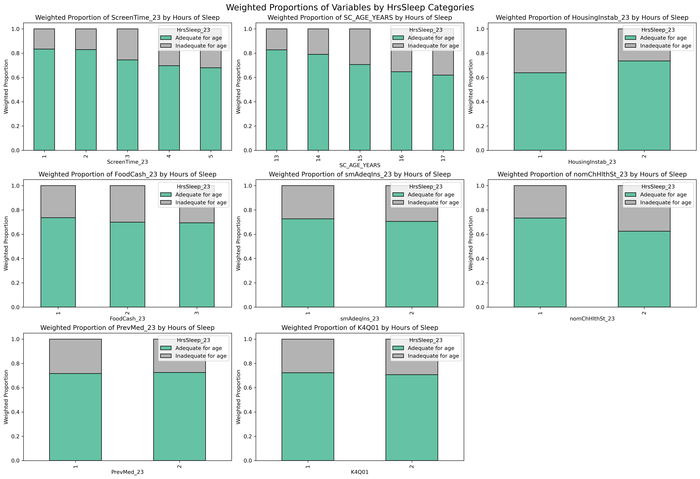
Features, target and sample weights are split into training and test sets. The split worked well for a relatively even distribution of the target variable, as shown
in Table 7. Tables 8 and 9 provide the first five rows of data for the training and testing data, respectively.
Table 7
Table 8
Table 9
Due to the data use agreement, these data are stored on a private repository. The state-level data used in the multinomial Naïve Bayes are here:
NSCH_AHR_state.csv.
The family-level data used in the Bernoulli Naïve Bayes are here:
NSCH_fam.csv.
Code
The following Python program contains the code for the Multinomial Naïve Bayes analysis:
5a_NSCH_Multinonial_Naive_Bayes_Analysis.
The first step of the code is to read in the family-level data from NSCH. Next, the following features were kept and missing values were replaced with the mode:
five-level health status, child's screen time usage, child's age, three-level family food and cash assistance, number of family members in the household, and
highest-level of adult education for the family. The target variable of inadequate hours of sleep for age was also kept and replaced with the mode if missing.
Features, target and sample weights are split into training and test sets.
Next, the Multinomial Naïve Bayes classifier is instanciated and fit with the above target, feature and sample weight variables using the training data. The confusion
matrix was assessed and the model performed poorly at a 0.5 threshold. As such, the optimal threshold was assessed from accuracy, recall and f-1 scores. After determining
a threshold of 0.3 was ideal, the model was refit at this level. The following hyperparameters were used: 'alpha': 1.0, 'class_prior': None, 'fit_prior': True,
'force_alpha': True. Measures of model performance are calculated, including weighted accuracy, recall, f1-score and ROC/AUC for the test set. This follows with the
calculation of log probabilities for the features. Finally, partial dependency plots are created for each feature.
The following Python program contains the code for the Bernoulli Naïve Bayes analysis:
5b_NSCH_Bernoulli_Naive_Bayes_Analysis.
The first step of the code is to read in the family-level data from NSCH. Next, the following features were kept and missing values were replaced with the mode:
child's screen time usage, child's age, housing instability, family food and cash assistance, adequate and continuous insurance, health status, preventative care
visits, and a place to get health care. Dummy variables were created for the features. The reference categories were NOT dropped, as all categories are needed to
complete the Naïve Bayes analysis. The target variable of inadequate hours of sleep for age was also kept and replaced with the mode if missing. Features, target
and sample weights are split into training and test sets.
Next, the Bernoulli Naïve Bayes classifier is instanciated and fit with the above target, feature and sample weight variables using the training data. The following
hyperparameters were used: 'alpha': 1.0, 'binarize': 0.0, 'class_prior': None, 'fit_prior': True, 'force_alpha': True. Measures of model performance are calculated,
including weighted accuracy, recall, f1-score and ROC/AUC for the test set. This follows with the calculation of log probabilities for the features. Finally, partial
dependency plots are created for each feature.
Results
Of the 15,391 teenages who participated in NSCH, 4272 (27.8%) reported inadequate sleep. The weighted Multinomial Naïve Bayes classifier was first run with the default threshold of 0.5. As shown in Figure 27,
the model performed poorly with zero true positives detected. As such, we conducted an analysis of the accuracy, recall and f1-scores by various thresholds (Figure 28 and 29) and determined that a threshold
of 0.3 provided the best balance of these measures.
Figure 27
Figure 28
Figure 29
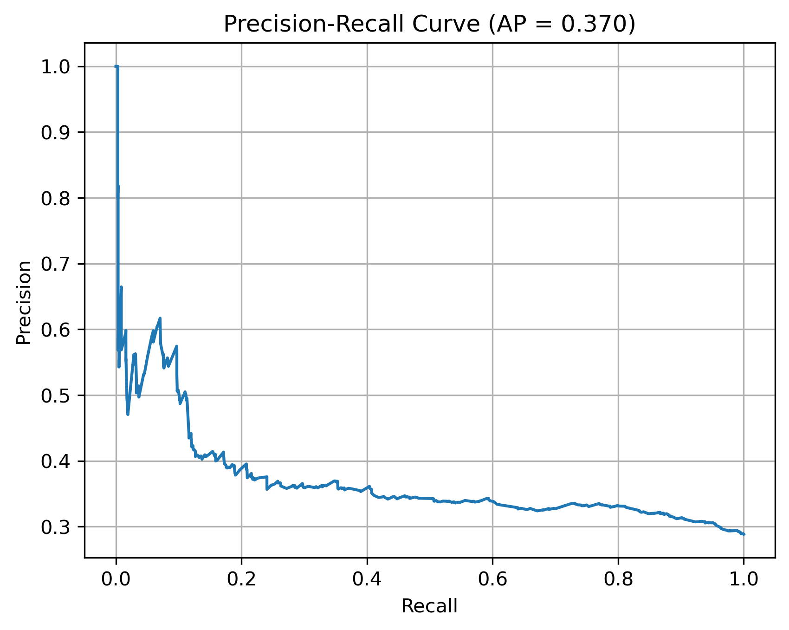
The multinomial Naïve Bayes model was updated with a threshold of 0.3, rerun and assessed for performance. The updated model performed better (Figure 30), although
there were more false positive results, as one would expect with a threshold of 0.3. The accuracy, f1-score and recall of the model were 0.68, 0.25 and 0.18,
respectively. The area under the curve was only 0.56, or slightly better than chance (Figure 31).
Figure 30
Figure 31
To better understand the relationship between the features and the target variable, we calculated log-probabilities for each feature. A positive log-probability
score indicates that the feature is more associated with class 1 (inadequate sleep). A negative score means it is more associated with class 0 (adequate sleep).
The magnitude of the score shows how influential the feature is. As seen in Figure 32, the child having poorer health status and greater screen time are associated
with inadequate sleep, while care givers having greater education and larger family size are associated with adequate sleep. We verified these relationships with
partial dependency plots (data not shown).
Figure 32
In addition to a multinomial Naïve Bayes analysis, we also completed a Bernoulli Naïve Bayes analysis. This approach appeared to work much better with our available
data. Creating dummy variables for multi-level features allowed us to differentiate the influence of the groupings within the features. The confusion matrix is provided
in Figure 33. Although the accuracy was good at 0.70, the f1-score (0.23) and recall (0.15) were poor. As illustrated by the ROC-curve in Figure 34, the area under the curve was
0.66.
Figure 33
Figure 34
We also looked at log probabilities for the features and saw interesting patterns emerge (Figure 35). Younger children (ages 13 and 14) and children with less screen time
per day (0-2 hours) were associated with having adequate sleep for their age. Conversely, older teens (ages 16 and 17), children with greater screen time per day
(3 or more hours), children experiencing housing instability, and children with poorer health were associated with having inadequate sleep for age. We confirmed these
associations by reviewing partial dependency plots for all features (data not shown).
Figure 35
Conclusions
The American Academy of Sleep Medicine recommends that to promote optimal health, teens should regularly sleep eight to 10 hours per 24-hour period (Ref: Paruthi).
This Naïve Bayes analysis found that older teens, teens using screens for 3 or more hours per day, those with poorer health, and those with housing instability
are more at risk for inadequate sleep. Helping these groups obtain enough sleep could improve their overall physical and mental health.
References
Baladram, S. Bernoulli Naive Bayes, Explained: A Visual Guide with Code Examples for Beginners. Unlocking predictive power through Yes/No probability.
Towards Data Science. August 2024.
Available from: https://towardsdatascience.com/bernoulli-naive-bayes-explained-a-visual-guide-with-code-examples-for-beginners-aec39771ddd6/
Yıldırım, S. Naive Bayes Classifier – Explained. Theory and implementation with scikit-learn. Medium, Towards Data Science Archive. Feb 2020.
Available from: https://medium.com/data-science/naive-bayes-classifier-explained-50f9723571ed
Mocquin, Y. Multinomial Naive Bayes Classifier. A complete worked example for text-review classification. Towards Data Science. March 2024.
Available from: https://towardsdatascience.com/multinomial-naive-bayes-classifier-c861311caff9/
Paruthi, S., Brooks, L, D'Ambrosio, C, et. al. Recommended Amount of Sleep for Pediatric Populations: A Consensus Statement of the American Academy of Sleep
Medicine. Journal of Clinical Sleep Medicine (2016). https://doi.org/10.5664/jcsm.5866
Decision Trees
Overview
Decision Trees are a supervised machine learning algorithm for classification analysis. The root node of the tree contains the entire dataset (refer to the
illustration of the tree structure). From the root node, the tree branches out to decision nodes until a leaf or final class assignment node is met. Leaf nodes may
be pure (i.e. all datapoints in the leaf belong to the same class) or impure (i.e. the data in the leaf are mixed classes).
Illustration of the Structure of Decision Trees (Source: Dash, 2022)
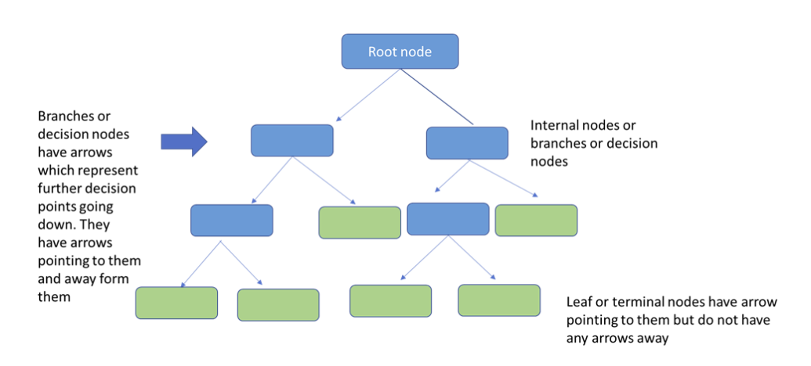
Decision nodes contain conditions by which the data are split. The algorithm attempts every possible split and uses either information gain or GINI to determine the
best split. Specifically, the goal is to implement the condition that makes the data and each child node the most predictable or homogenous in the target variable.
We can measure how mixed the data are by calculating the entropy before and after the split, and then calculate the information gain. Entropy is calculated as follows,
where "s" is the subset of data, "k" is the number of possible classes (e.g. Yes/No), and Pi is the proportion in class i:
Entropy ranges from zero to one inclusive. Entropy of zero indicates perfect purity, where all datapoints are from the same class, while entropy of 1 is perfect
impurity (i.e. a 50/50 split between classes). As the depth of the tree increases the entropy decreases. With these calculations of entropy we can calculate the
information gain.
\[
\text{Information Gain} = \text{entropy of the parent node - entropy of the child nodes}
\]
Illustration of Decision Tree Slitting (Source: Modified from Dash, 2022)
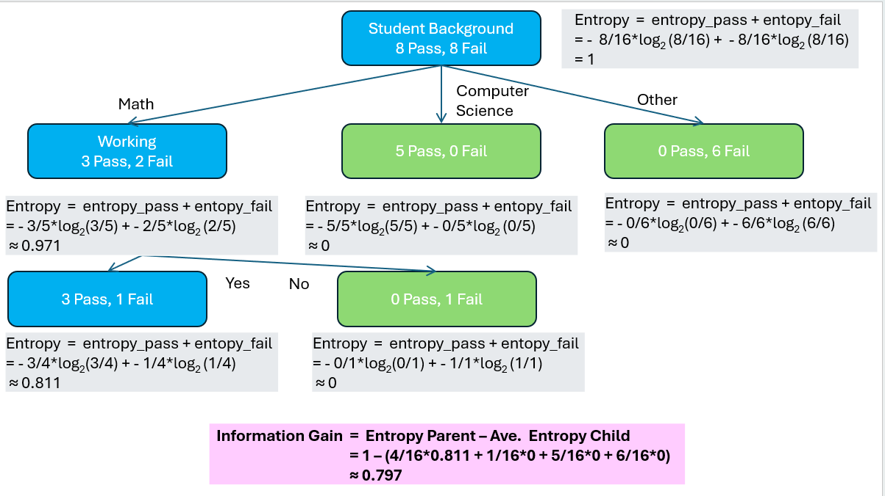
The image above illustrates the calculation of entropy and information gain for the decision tree. The entire system has an entropy of 1 or perfect impurity because
the data are split 50/50 at the root node. The first split using the student's background reduces the entropy dramatically, since the computer science students all
passed and the students from other backgrounds all failed the test. These nodes in green are pure leaf nodes (i.e. entropy = 0). Since math students still have a mix
of outcomes, the blue node is further split by whether or not the student is working. Lastly, the information gain of the tree is calculated as the entropy of the
system minus the average child node. The information gain is about 0.8.
Alternatively, we can determine the best split using the GINI index. The GINI Index calculates the probability of misclassifying a random instance. Because we don't
want to incorrectly classify a record, a lower GINI index is better. The formula for the GINI Index is as follows, where "j" is the number of possible classes
(e.g. Yes/No), and Pi is the proportion of the class in the node:
\[
Gini = 1 - \sum_{i=1}^{j} P_i^2
\]
Since decision trees are easy to interpret and understand, they have a variety of uses. A recent article from Geeks for Geeks (Decision Trees) noted six applications
of Decision Trees, as follows:
Bankers determine whether to accept or reject a loan application based on factors like credit score, income, employment status and loan
history.
Health providers may diagnose diseases considering factors like symptoms, biomarkers, family history, and demographics.
Educators predict whether students will pass or fail given student attendance, study time and past performance.
Businesses predict whether a customer will leave or stay based on purchasing history, behavioral choices and length of tenure.
Fraud Detection: In finance, Decision Trees are used to detect fraudulent activities, such as credit card fraud. By analyzing past transaction data and patterns, Decision Trees can identify suspicious activities and flag them for further investigation.
A decision tree can also be used to help build automated predictive models which have applications in machine learning, data mining and statistics.
Data Prep
This analysis uses the state-level data from NSCH and AHR. The following continuous state-level features were kept:
percentage of children in excellent or very good health, percent of children who had a place they usually went to for healthcare,
percent of children receiving at least one preventative care visit, percentage of adults age 25 and older with at least a high school diploma or equivalent,
percentage of the population younger than age 18, percentage of households living at or above the federal poverty level,
public health funding per capita, and sum of the social support and engagement measures. The target variable was constructed as good insurance coverage if the
state is both above the mean of states for residents having any insurance (Insured from AHR) AND above the mean of states for children having continuous and
adequate insurance (Insurance from NSCH).Figure 36 provides a heatmap of the features that were considered for the model.
Figure 36
Features and target are split into training and test sets. The split worked well for a relatively even distribution of the target variable, as shown
in Table 10. The training and test data are disjoint because the training data are used to train the model and help it to
learn patterns from the data. The test data are used to evaluate the model's performance on unseen data. If the model is tested on the same data it was trained on, it
may appear to perform better than it actually does, which could lead to misuse of the model. Tables 11 and 12 provide the first five rows of data for the training and testing data, respectively.
Table 10
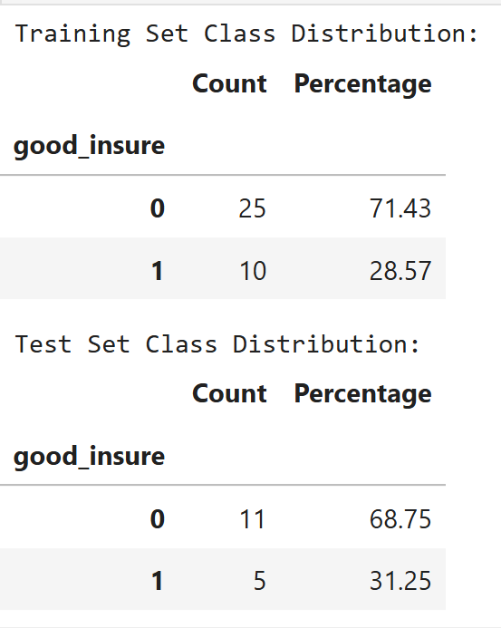
Table 11
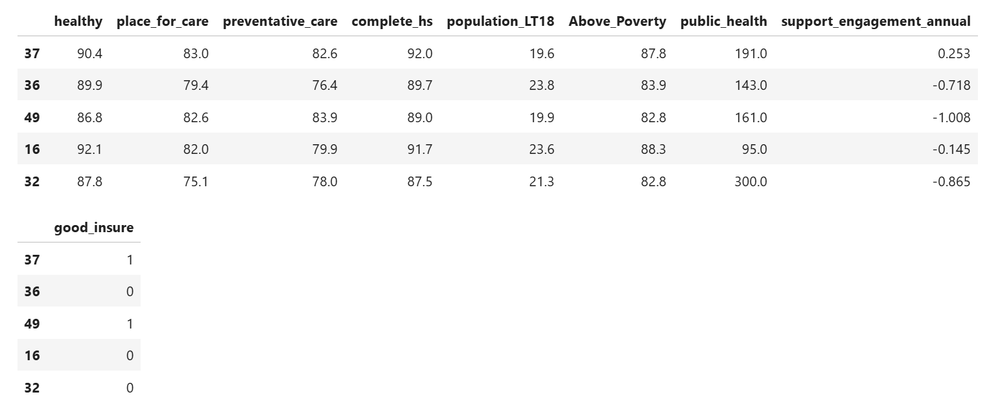
Table 12
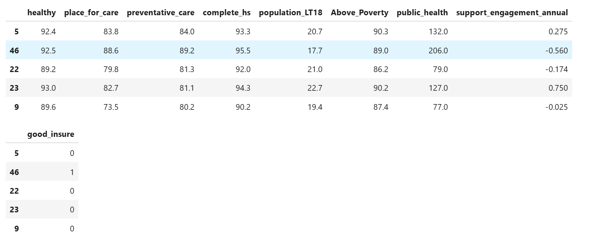
Data for the Random Forest analysis were prepared in a similar manner. Features of interest included: child's screen time usage, child's age, housing instability, family food and cash assistance,
adequate and continuous insurance, health status, preventative care visits, and a place to get health care. Dummy variables were created for the features and the reference categories were dropped.
The target variable of inadequate hours of sleep for age was also kept and replaced with the mode if missing. These data are from the family-level dataset and as such the sampling weights were also
included in the train-test split. Specifically, features, target and sample weights are split into training and test sets.
Due to the data use agreement, these data are stored on a private repository. The state-level data used in the decision tree analysis are here:
NSCH_AHR_state.csv.
The family-level data used in the random forest analysis are here:
NSCH_fam.csv.
Code
The following Python program contains the code for the decision tree analysis:
6_NSCH_AHR_Decision_Tree_Analysis.
The first step of the code is to read in the state-level data from NSCH and AHR. Next, the following continuous state-level features were kept:
percentage of children in excellent or very good health, percent of children who had a place they usually went to for healthcare,
percent of children receiving at least one preventative care visit, percentage of adults age 25 and older with at least a high school diploma or equivalent,
percentage of the population younger than age 18, percentage of households living at or above the federal poverty level,
public health funding per capita, and sum of the social support and engagement measures. Social support and engagement measures is missing for Washington DC. This missing
value has been replaced with the median social support. The target variable was constructed as good insurance coverage if the
state is both above the mean of states for residents having any insurance (Insured from AHR) AND above the mean of states for children having continuous and
adequate insurance (Insurance from NSCH).
Next, the decision tree classifier is instanciated, fit with the above target, feature and sample weight variables, and tuned using the training data. For the
hyperparameter tuning a max_depth of 8, 9, 10, and None and min_samples_split of 2, 4, 6 were assessed with criterion='gini', splitter='best' and min_samples_leaf=1.
The resulting hyperparameters for the optimal model were: 'ccp_alpha': 0.0, 'class_weight': None, 'criterion': 'gini', 'max_depth': 8, 'max_features': None,
'max_leaf_nodes': None, 'min_impurity_decrease': 0.0, 'min_samples_leaf': 1, 'min_samples_split': 2, 'min_weight_fraction_leaf': 0.0, 'monotonic_cst': None,
'random_state': 4567, 'splitter': 'best'. Measures of model performance are calculated,
including weighted accuracy, recall, f1-score and ROC/AUC for the test set. This follows with the calculation of feature importance based on mean decrease in impurity.
Additionally, the tree is plotted to assess how the data are split. Finally, partial dependency plots are created for each feature.
The Python program for the random forest analysis is located here:
7_NSCH_Random_Forest_Analysis.
The first step of the code is to read in the family-level data from NSCH. Next, the following features were kept and missing values were replaced with the mode:
child's screen time usage, child's age, housing instability, family food and cash assistance, adequate and continuous insurance, health status, preventative care
visits, and a place to get health care. Dummy variables were created for the features and the reference categories were dropped. The target variable of inadequate
hours of sleep for age was also kept and replaced with the mode if missing. Features, target and sample weights are split into training and test sets.
Next, the random forest classifier is instanciated and fit with the above target, feature and sample weight (sample_weight = FWC_train) variables using the training data.
The following hyperparameters were used: 'bootstrap': True, 'ccp_alpha': 0.0, 'class_weight': 'balanced', 'criterion': 'gini', 'max_depth': None, 'max_features': 'sqrt', 'max_leaf_nodes': None,
'max_samples': None, 'min_impurity_decrease': 0.0, 'min_samples_leaf': 1, 'min_samples_split': 2, 'min_weight_fraction_leaf': 0.0, 'monotonic_cst': None,
'n_estimators': 100, 'n_jobs': None, 'oob_score': False, 'random_state': 4567, 'verbose': 0, 'warm_start': False. Measures of model performance are calculated,
including weighted accuracy, recall, f1-score and ROC/AUC for the test set. This follows with the calculation of feature importance based on mean decrease in impurity. In
order to gain an understanding of how the model was splitting features, one of the trees is plotted. Finally, partial dependency plots are created for each feature.
Results
Few states have good insurance coverage for their residents with only 15/51 (29.4%) meeting this defined benchmark. The decision tree with the state-level outcome of good insurance was fit on the training set,
which included 35 states (~70%). The model performance was assessed on the test set of 16 states. As shown in Figure 37, the model performed well with an accuracy was 0.75. Both the f1-score (0.60) and
recall (0.60) indicate strong performance. Per capita spending on public health topped the important features with a feature importance score of 0.5 (Figure 38). Although to a lesser degree, other important
features for predicting good insurance included the proportion of the population above the poverty line, use of preventative care, health status of the population
and a supportive community.
Figure 37
Figure 38
The optimal decision tree had a max depth of 8. For illustrative purposes, Figure 39 shows the first few levels. As seen with the feature importance analysis
public health plays an important role in the classification by splitting the root node at less than or equal to $146 per person spent on public health. For context,
most states spend between $100-200 per capita on public health (median(P25, P75) = $123 (96.0, 156.5)). Branching to the left, 25 states spent $146 or less per person
on public health and 23 of these were classified as not good insurance. In contrast, ten states branched to the right because they spent more than $146 per person on public
health. Eight of these states were classified as meeting good insurance coverage.
As illustrated by Figure 40, the ROC-curve of the test data yielded an area under the curve of 0.709. This indicates that the model has a good ability to
distinguish between states with and without good insurance coverage.
Figure 39
Figure 40
The random forest analyses did not perform well, resulting in an accuracy of 0.57, which is only marginally better than chance (data not shown). Additionally, the f1-score of 0.39 and recall score of 0.48 were
poor.
Conclusions
The decision tree with the state-level outcome of good insurance found that per capita spending on public health of at least $147 per person delineated the data fairly well into states with and without good
insurance coverage. This has important implications for states hoping to bolster insurance coverage for their residents. Since the median public health spending is $123, on average states would only need to
increase their spending by approximately $24 per person in order to reach this threshold. Such an investment could provide residents with greater access to health coverage. According to the American Hospital
Association, "studies confirm that coverage improves access to care; supports positive health outcomes, including an individual’s sense of their own health and well-being; incentivizes appropriate use of health care resources; and reduces financial strain
on individuals, families and communities.
References
Dash, S. Decision Trees Explained – Entropy, Information Gain, Gini Index, CCP Pruning. Though Decision Trees look simple and intuitive, there is nothing very
simple about how the algorithm goes about the process deciding on... Towards Data Science. November 2022.
Available from: https://towardsdatascience.com/decision-trees-explained-entropy-information-gain-gini-index-ccp-pruning-4d78070db36c/
Decision Trees. Geeks for Geeks. June 2025.
Available from: https://www.geeksforgeeks.org/machine-learning/decision-tree/
Schoen C, DesRoches C. Uninsured and unstably insured: the importance of continuous insurance coverage. Health Serv Res. 2000 Apr;35(1 Pt 2):187-206. PMID: 10778809; PMCID: PMC1089095.
American Hospital Association. Report: The Importance of Health Coverage.
Xtreme Gradient Boosting (XGB)
Overview
By combining multiple models to improve overall performance, ensemble methods in machine learning provide a powerful alternative to a single model.
Ensemble techniques include boosting, bagging and stacking. For this analysis, we implement boosting, which trains models considered weak leaners
sequentially by focusing on misclassified points in subsequent models. As the name implies, weak learners are simple models (e.g. a decision stump
or a shallow decision tree). Weak learners perform only slightly better than chance. However, by combining them with boosting methods, the collective
result is a strong learner with greater model performance.
Boosting models include AdaBoost, Gradient Boosting, and XGBoost (Table 13). These models iteratively reduce variability and bias in the data by
focusing on misclassified or hard to classify points.
Table 13. Comparison of Boosting Methods Sources: Subha (Medium), GeeksforGeeks
AdaBoost
Gradient Boosting
XGBoost
General Approach
Focuses on misclassified points from previous models by increasing their weight.
Builds models sequentially, with each new model correcting the residual errors of the previous model.
An optimized and regularized version of Gradient Boosting that uses parallel processing and advanced regularization to prevent overfitting.
Base Estimators
Usually, decision stumps.
May use deeper trees with 8–32 leaves.
Uses a regularized greedy forest algorithm to build trees.
Handling Overfitting
Stumps generally prevent overfitting.
Prone to overfitting if not carefully tuned.
Regularization hyperparameters (L1 and L2) control complexity and help prevent overfitting.
Speed and Efficiency
Fast to train despite being a serial process.
Can be slow to train due to sequential nature.
Much faster and more scalable due to parallel processing and a cache-aware algorithm.
Use Cases
Simpler problems or when a quick model is needed for a small dataset.
Problems where accuracy is the highest priority and computational resources are limited.
Scenarios where performance, speed, and regularization are crucial.
As shown in the image below, Adaboost weights the misclassified points higher in subsequent models. This approach allows the later models to focus on hard to
classify records. Adaboost uses a learning rate (typically between 0.1 - 1.0) to weight the contribution of each weak learner in the overall model (weighted
majority vote).
Adaboost Weighting Technique
In comparison, Gradient Boost and XGBoost minimize the residuals. As with regression, harder to classify points have larger residuals. Weak
learners are combined to create a strong learner (illustration below). Gradient Boost also uses a learning rate; however, it typically ranges from 0.01 to 3.0
and scales the contribution of each new tree to the final combined model. A smaller learning rate generally results in a better fitting model, but requires more iterations to converge.
Gradient Boosting Method (Source: CU Boulder CSCI 5612 Machine Learning for Data Science Class Notes)
Data Prep
This analysis includes both individual characteristics from NSCH and state-level data from AHR (those that do not overlap with NSCH, e.g., excluded insurance
coverage and poverty). The following individual-level features were kept: place to get health care (binary), age (continuous), birth sex (binary), housing instability (binary),
family receiving WIC (binary), family food and cash assistance (ordinal), poverty level (ordinal), count of related-family members in house (ordinal), health status
(ordinal), continuous and adequate insurance (binary), screen time usage (ordinal), adequate sleep (binary), and highest level of education received by an adult in
the household (ordinal). State-level features that were kept included: percentage of the population younger than age 18, number of primary care_providers per 100,000
people, public health funding per capita, sum of the social support and engagement measures, and region (categorical). The target variable assesed not receiving
preventative care. Ordinal variables entered the model as categorical with order, binary were recoded as 0/1, and region was one-hot encoded with the first region
dropped. Figure 41 provides a heatmap of the features that were considered for the model.
Figure 41
Features, target, and weights are split into training and test sets. The split worked well for a relatively even distribution of the target variable, as shown
in Table 14. The training and test data are disjoint because the training data are used to train the model and help it to
learn patterns from the data. The test data are used to evaluate the model's performance on unseen data. If the model is tested on the same data it was trained on, it
may appear to perform better than it actually does, which could lead to misuse of the model. Tables 15 and 16 provide the first five rows of data for the training
and testing data, respectively.
Table 14
Table 15
Table 16
Due to the data use agreement, these data are stored on a private repository. The state-level data are here:
NSCH_AHR_state.csv.
The family-level data are here:
NSCH_fam.csv.
Code
The following Python programs contains the code for the XGBoost analyses:
8a_NSCH_AHR_XGB_Analysis.
and
8b_NSCH_AHR_XGB_Analysis.
The first step of the code is to read in the state-level and individual-level data from AHR and NSCH. Next, the aforementioned features are kept and missing
value are replaced with the most common values. The target variable of no preventative care was constructed as 1=no preventative care, 0=preventative care
from the variable "PrevMed_23", which is an indicator variable for receiving preventative care. Additionally, class imbalance was addressed with scale_pos_weight
where the imbalance weight was determined from a ratio of sample-weighted counts for negative and positive cases (i.e. spw = weighted_neg / weighted_pos). For
preventative care, for each positive case (i.e. no preventative care) there are 3.87 negative cases.
Next, the XGBoost classifier is instanciated, fit with the above target, feature and sample weight variables, and tuned using the training data.
Measures of model performance are calculated, including weighted accuracy, recall, f1-score and ROC/AUC for the test set. This follows with the calculation of
feature importance based on gain. Additionally, we examine the first, fifth and tenth trees to assess how the data are split. This process was repeated twice.
First, we used the xgb.XGBClassifier() from `xgboost`. This method integrates well with sklearn; however, it is less efficient with large-survey data that requires
sampling weights. As such, we also implemented the XGBoost model using xgb.DMatrix(). Using DMatrix directly results in faster model-building and natural integration
of the sampling weights.
Results
Of the 54,159 children included in the NSCH, 8872 (16.38%) did not receive preventative care. We weighted and assessed these data with XGBoost. The two approaches for fitting the XGBoost model
resulted in almost identical results. As expected, DMatrix was much faster than xgb.XGBClassifier(). Since the
results were so similar, we will focus on those from DMatrix. As shown in Figure 42, the model performed okay with an accuracy was 0.67. The f1-score (0.46) and
recall (0.66). Although we captured 66% of the true positive cases, we missed 34%.
Figure 42
The optimal XGBoost model included the following hyperparameters:
"objective": "binary:logistic", # Logistic regression on trees
"eval_metric": "logloss",
"tree_method": "hist", # histogram trees- good for large weighted datasets
"scale_pos_weight": float(spw),
"min_child_weight": 5,
"lambda":5, # L2 regularization
"alpha":1, # L1 regularization
"gamma":5, # Loss reduction needed to split
"seed": 4567
"max_depth": 3,
"eta": 0.1, # using bigger eta because there are
# 14 million weighted records (54,000
# unweighted)
"subsample": 0.9, # Row sampling rate - good regularization
"colsample_bytree": 0.7 # feature sampling - good regularization
Based on the max-depth and regularization, the model preferred shallow, simple trees. This approach favored the large, weighted survey data used in the analysis.
As illustrated by Figure 43, the ROC-curve of the test data yielded an area under the curve of 0.73. This indicates that the model has a good ability to
distinguish between individuals needing preventative care.
Figure 43
The most important feature for predicting no preventative care when assessed by gain was having a usual place for care (37%) (Figure 44). Although to a lesser
degree, other important features included adult education (7%), the child's age (7%) and Northeastern states (5%). Figure 45 shows the directionality of the
effect with not having a place for care, household adults having less education, older children and not living in the Northeast were all related to not receiving
preventative care.
Figure 44
Figure 45
Conclusions
The XGBoost model found that not having a usual place to receive health care is the most predictive feature of not receiving preventative care. Other features, such
as lower education, older children and living outside of the Northeast, were also important features. This suggests that targeting those who are most likely
to miss visits with public health messaging and helping people find a regular place for care are viable interventions in increasing preventative care coverage.
References
Subha. Boosting — Adaboost, Gradient Boost and XGBoost. Medium. Mar 29, 2024.
Available from: https://medium.com/@pingsubhak/boosting-adaboost-gradient-boost-and-xgboost-bdda87eed44e
GradientBoosting vs AdaBoost vs XGBoost vs CatBoost vs LightGBM. GeeksforGeeks. Jul 23, 2025.
Available from: https://www.geeksforgeeks.org/machine-learning/gradientboosting-vs-adaboost-vs-xgboost-vs-catboost-vs-lightgbm/
Summary of Results
Through exploratory data analysis and machine learning, we attempted to gain insights about the health of American children from the 2023
National Survey of Children's Health (NSCH)
and
America's Health Rankings (AHR).
We initially explored 10 questions through EDA and identified interesting patterns for questions 1, 6, 9, and 10, specifically:
Question 1: What state-wide factors predict state-wide immunization coverage by 24-months?
Question 6: What state-wide features predict state-wide insurance coverage?
Question 9: Among teenagers, what features predict inadequate sleep?
Question 10: What factors contribute to children not accessing preventive care?
These four questions were explored in greater detail through various unsupervised and supervised machine learning methods. Performance varied widely across models, with cluster analysis,
Principle Component Analysis and tree-based approaches providing the best fit for the data. Naïve Bayes performed the worst. Table 17 provides a comparison of model performance for the various
methods. Please refer to the individual tabs for visualizations of the findings.
Table 17. Model Performance
Model
Research Question
Model Performance Metrics
Summary of Results
K-Means Clustering
Question 1: What state-wide factors predict state-wide immunization coverage by 24-months?
K-Means predicted the states on the further sides of each cluster correctly, while the area of intersection had greater misclassification.
There are unique similarities within states that have similar rates of insurance and preventative care coverage. States clustering together with
lower coverage tended to also have lower immunization coverage. Those with medium to high insurance and preventative care rates tended to also have medium to high immunization coverage.
These results are in-line with the visual inspection of the data which showed a positive correlation between insurance and preventative care, as well as higher immunization rates for
states with higher insurance and preventative care coverage. These results identify a gap for states with low coverage. Making care accessible through insurance and preventative care
appears to be related to higher childhood immunization rates.
Hierarchical Clustering
Question 1: What state-wide factors predict state-wide immunization coverage by 24-months?
Performed better than K-Means. As with K-Means, the points on the further sides of each cluster were identified correctly, while the area of intersection was more problematic. Hierarchical clustering
also showed the same relationships as K-Means between insurance, preventative care and immunization coverage.
PCA
Question 1: What state-wide factors predict state-wide immunization coverage by 24-months?
Ten features were reduced to seven, which captured 95% of the variation in the data. PC1 accounted for approximately 43% of the variation in the data, followed by PC2 with 23% of the variance.
The only feature positively correlated with PC1 is the state population under age 18. We see greater variability in the loadings for PC2 with excellent or good health, a place for care, completing high school,
above the poverty line, engagement in the community and the population less than 18 showing positive correlation with PC2. The biplot for PC1 and PC2 shows that PC1 uniquely separates states with large numbers
of children under age 18 that also have lower values for primary care providers, preventative care and insurance. States in this quadrant with positive PC1 and positive PC2 include many Southern and Southwest
states - South Carolina, Georgia, Arkansas, Oklahoma, Texas and Nevada, as well as Indiana and New Jersey. The states in the quadrant where PC1 is negative and PC2 is positive, have higher levels of
health, income, completing high school, places to regularly receive care and engagement. However, this same quadrant has lower levels for features related to health care access (primary care providers, preventative
care and insurance). This suggests that although these states may have better education and less poverty, there may be gaps in health care coverage. Western states (Utah, Idaho, Colorado, Wyoming, Montana, Washington)
and mid-Western states (South Dakota, North Dakota, Minnesota, Kansas, Nebraska, Iowa, Illinois, and Ohio) primarily make up this group. Arkansas, Virginia and Maryland are also included. When both PC1 and PC2 are
negative, we see that states in this quadrant are higher in primary care providers, preventative care and insurance. These states are lower in population under 18 with higher completion of
high school and percentage above the poverty line, suggesting that what makes them unique is the high health care coverage. States in the last quadrant where PC1 is positive, but PC2 is negative have higher population
< 18 with some healthcare services available and weaker education and economic measures.
Multinomial Naïve Bayes
Question 9: Among teenagers, what features predict inadequate sleep?
Due to extremely poor model performance with a threshold of 0.5. We completed a threshold analysis and found that 0.3 provided the best balance of accuracy, recall and f1-scores.
Although the model performed poorly, we assessed the log probability differences for the features. We found that the child having poorer health status and greater screen time are associated with inadequate sleep,
while care givers having greater education and larger family size are associated with adequate sleep.
Bernoulli Naïve Bayes
Question 9: Among teenagers, what features predict inadequate sleep?
The model had high accuracy, but low F1-score and recall. As with the Multinomial Naïve Bayes, we calculated log probability differences for the features. Younger children (ages 13 and 14) and children with less
screen time per day (0-2 hours) were associated with having adequate sleep for their age. Conversely, older teens (ages 16 and 17), children with greater screen time per day (3 or more hours), children experiencing
housing instability, and children with poorer health were associated with having inadequate sleep for age.
Decision Tree
Question 6: What state-wide features predict state-wide insurance coverage?
The model performed well. Per capita spending on public health topped the important features with a feature importance score of 0.5. Although to a lesser degree, other important features for predicting good
insurance coverage included the proportion of the population above the poverty line, use of preventative care, health status of the population and a supportive community. The optimal decision tree had a max depth of 8.
Public health plays an important role in the classification by splitting the root node at less than or equal to $146 per person spent on public health. For context the median value of public health spending is $123 per
person. Branching to the left, 25 states spent $146 or less per person on public health and 23 of these were classified as not good insurance. In contrast, ten states branched to the right because they spent more than
$146 per person on public health. Eight of these states were classified as meeting good insurance coverage.
Random Forest, and XGBoost
Question 9: Among teenagers, what features predict inadequate sleep?
The model performed poorly at predicting inadequate sleep. Important features included not having insurance, not having a place to receive care and not having preventative care each had a feature importance score of
approximately 0.1.
XGBoost
Question 10: What factors contribute to children not accessing preventive care?
Although we captured 66% of the true positives with the model, we missed 34%. The most important feature for predicting no preventative care when assessed by gain was having a usual place for care (37%).
Although to a lesser degree, other important features included adult education (7%), the child's age (7%) and Northeastern states (5%). Regarding the directionality of these effects, not having a place for care,
household adults having less education, older children and not living in the Northeast were all related to not receiving preventative care.
Project Challenges
Data Acquisition Challenges
The US government funds several large studies on the health and well-being of children. Generally, these data are publicly available on the National Institute of Child Health and Human Development - Data and
Specimen Repository. However, the website has been down since May 2025 for new data requests. As such, this project relied on publicly available household survey data with location identifiers at the state-level.
As with many large studies, the National Survey of Child Health requires weighting the data to roll the data up to the state-level.
American Health Rankings include good documentation for accessing the data via API. However, there are many variables and determining the individual variable names to pull with the API was challenging.
Model Challenges
The weighted Multinomial Naïve Bayes classifier was first run with the default threshold of 0.5. The model performed poorly with zero true positives detected. As such, we conducted an analysis of the accuracy,
recall and f1-scores by various thresholds and determined that a threshold of 0.3 provided the best balance of these measures. From here we were able to improve the model. However, neither the multinomial nor the
Bernoulli Naïve Bayes models performed well.
Some of the models did not support weighting the data with sampling weights. For example, there is no support in sklearn.cluster.AgglomerativeClustering() for weights. As such, we focused on state-level analyses
for these models.
The class-imbalance for our outcomes posed challenges, particularly when using the weighted-individual data. Of all the model types, XGBoost handled this the best with scale_pos_weight where the imbalance weight
was determined from a ratio of sample-weighted counts for negative and positive cases (i.e. spw = weighted_neg / weighted_pos). For preventative care, for each positive case (i.e. no preventative care) there are
3.87 negative cases. We were able to incorporate this with the sampling weights for the individual subjects.
Conclusions
Summary of findings
This research found several important findings across our main outcomes of rates of full vaccination by 24 months, sufficient sleep among teenagers,
adequate insurance coverage, and uptake of preventative care. We found that preventative care and insurance coverage are good predictors of immunization coverage.
K-Means and hierarchical clustering illustrated that states that have similar rates of insurance and preventative care coverage cluster together. Those with
lower coverage tended to also have lower immunization rates. Those with medium to high insurance and preventative care rates also clustered together. This group
tended to also have medium to high immunization coverage. These results show the interrelatedness of preventative care with insurance and immunizations.
They identify that a gap in coverage for insurance and preventative care corresponds to a gap in childhood immunization rates. This interdependency suggests that
improving one of these measures may positively influence the others. PCA analysis supported these findings and showed that states with higher populations <18,
fewer primary care providers, less preventative care and reduced insurance coverage may require additional support to increase immunization coverage.
Median vaccine coverage was 67.7% across the states. If we considered < 67.5% as low coverage and 67.5% or greater as medium to high coverage, EDA showed that the percentage of children receiving at
least one preventative care visit is slightly higher in the medium or high group. Specifically, in the low immunization group, a median of 79.4% of children and for the medium or high group, a median of 80.9% of
children received a preventative care visit. The decision tree with the state-level outcome of good insurance found that per capita spending on public health of at least $147 per person delineated the data fairly
well into states with and without good insurance coverage. This has important implications for states hoping to bolster insurance coverage for their residents. Since the
median public health spending is $123, on average states would only need to increase their spending by approximately $24 per person in order to reach this threshold.
Such an investment could provide residents with greater access to health coverage. According to the American Hospital Association, "studies confirm that coverage improves
access to care; supports positive health outcomes, including an individual’s sense of their own health and well-being; incentivizes appropriate use of health care resources;
and reduces financial strain on individuals, families and communities.
The American Academy of Sleep Medicine recommends that to promote optimal health, teens should regularly sleep eight to 10 hours per 24-hour period (Ref: Paruthi).
EDA found that limiting screen time appears to play a role for adequate hours of sleep for teenagers. Once the average hours of screen time exceed 1 hour per day, the weighted proportion of teens experiencing
inadequate sleep nearly doubles from 17% for 1 hour to 33% for 4 or more hours. For the detailed sleep analysis, we employed a Bernoulli Naïve Bayes. Influential features
for inadequate sleep included: older teens, greater screentime (3+ hrs/day), housing instability and children in poorer health. Helping these groups obtain enough sleep could improve their
overall physical and mental health.
The percentage of children receiving at least one preventative care visit ranged from 69.8% to 89.3%. EDA identified that poverty and moving were associated with not receiving preventative care.
States reported over 10% of households living below the federal poverty level (median(P25, P75) = 12.2(11.05,13.65)). As the percentage of households below the federal poverty level increases
(i.e. more people living in poverty), the percentage of children receiving preventative care decreases. Additionally, children experiencing housing instability or living three or more places in
the last year received a preventative care visit 69% of the time. Conversely, 80% of children who did not move more than once experienced a preventative care visit. The XGBoost model found that
not having a usual place to receive health care is the most predictive feature of not receiving preventative care. Other features, such
as lower education, older children and living outside of the Northeast, were also important features. This suggests that targeting those who are most likely to miss
visits with public health messaging and helping people find a regular place for care are viable interventions in increasing preventative care coverage.
References
WHO–UNICEF–Lancet Commission, 2020.
National Academies of Sciences, Engineering, and Medicine. 2024.
Launching Lifelong Health by Improving Health Care for Children, Youth, and Families.
Washington, DC: The National Academies Press.
https://doi.org/10.17226/27835
National Academies of Sciences, Engineering, and Medicine… 2024 Dec 30.
Child Health and Health Care: Uniqueness, Societal Importance, and Vision for the Future.
Available from:
https://www.ncbi.nlm.nih.gov/books/NBK610738/
Paruthi, S., Brooks L., D'Ambrosio C., et al. Recommended Amount of Sleep for Pediatric Populations.
Journal of Clinical Sleep Medicine (2016).
https://doi.org/10.5664/jcsm.5866
Schoen C, DesRoches C. Uninsured and unstably insured: the importance of continuous insurance coverage.
Health Serv Res. 2000 Apr;35(1 Pt 2):187–206. PMID: 10778809; PMCID: PMC1089095.
American Hospital Association. Report: The Importance of Health Coverage.
Subha. Boosting — Adaboost, Gradient Boost and XGBoost. Medium. Mar 29, 2024.
Available from: https://medium.com/@pingsubhak/boosting-adaboost-gradient-boost-and-xgboost-bdda87eed44e
GradientBoosting vs AdaBoost vs XGBoost vs CatBoost vs LightGBM. GeeksforGeeks. Jul 23, 2025.
Available from: https://www.geeksforgeeks.org/machine-learning/gradientboosting-vs-adaboost-vs-xgboost-vs-catboost-vs-lightgbm/
About Me
I’m a biostatistician and data scientist with over 20 years of experience applying statistical methods,
data management, and programming to address complex challenges in public health, healthcare, and social
science research. I hold master's degrees in Maternal and Child Health and Biostatistics from the
University of North Carolina Chapel Hill (2003).
Currently, I’m expanding my skill set as a full-time master’s student in the Data Science program at the
University of Colorado Boulder (expected graduation May 2026).
Alongside my studies, I work part-time as a research biostatistician at RTI International, where I’ve spent most
of my career.
Above all, I am mission-focused and purpose-driven. My passion lies in using data to advance knowledge, influence
policy, and create lasting, positive change for communities and families.
Coursework
My academic coursework at CU Boulder includes:
data structures and algorithms
frequentist and Bayesian statistics
data mining
machine learning
applied deep learning
In addition to being proficient in SAS, I’m building fluency in Python and R and continually learning
modern data science tools and frameworks.
Work Experience
I’ve led statistical teams and contributed to more than a dozen large-scale maternal and child health studies, including:
randomized controlled trials
observational cohorts
evaluation projects
My work spans the full research lifecycle:
protocol development and study design
advanced modeling
data analysis
publication
I've co-authored more than 50 peer-reviewed publications and actively support capacity building by mentoring junior
analysts and collaborating with global partners across the U.S., South Asia, Africa, and Central America.
Selected Project Experience
NHLBI nuMoM2b Heart Health Study 2
– Domestic network of observational and lab studies about heart health, particularly among those who experienced
an adverse pregnancy outcome (2020 to date)
NICHD Global Network for Women’s and Children’s Health Research
– International network of RCTs, registry, lab, and observational studies across 7 clinical sites, focusing on
impactful interventions promoting maternal and child health in low-resource areas (2004 to date)
Patterson JK, Thorsten VR, Eggleston B, et al. (2023) Building a predictive model of low birth weight in
low- and middle-income countries: a prospective cohort study.
BMC Pregnancy Childbirth. 22;23(1):600.
doi: 10.1186/s12884-023-05866-1.
Shankar, K., Hwang, K., Westcott, J.L., et al. (2023). Associations between ambient temperature and pregnancy outcomes
from three south Asian sites of the Global Network Maternal Newborn Health Registry: A retrospective cohort study.
BJOG: An International Journal of Obstetrics and Gynaecology.
http://doi.org/10.1111/1471-0528.17616.
Althabe, F., Belizan, J. M., McClure, E. M., et al. (2015). A population-based, multifaceted strategy to implement
antenatal corticosteroid treatment versus standard care for the reduction of neonatal mortality due to preterm birth
in low-income and middle-income countries: The ACT cluster-randomised trial.
Lancet, 385(9968), 629–639.
https://doi.org/10.1016/S0140-6736(14)61651-2.
Reddy, U. M., Page, G., Saade, G. R., et al. (2012). Karyotype versus microarray testing for genetic abnormalities
after stillbirth. New England Journal of Medicine, 367(23), 2185–2193.
https://doi.org/10.1056/NEJMoa1201569.